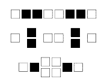
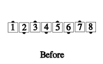
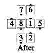
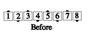
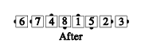

From any appropriate formation: The centers of each side (shown in black below) do Call #1, and, if it ends in a box, there is a mandatory axis change. The remaining outside dancers slide inward, and the new centers do Call #2 and stay in the center.

For example: Checkpoint Ah So by Swing Thru:
 
Checkpoint Tag the Line by Swing Thru:
 
© Copyright 1983, 1986-1988, 1995-2011 Bill Davis, John Sybalsky and CALLERLAB Inc., The International Association of Square Dance Callers. Permission to reprint, republish, and create derivative works without royalty is hereby granted, provided this notice appears. Publication on the Internet of derivative works without royalty is hereby granted provided this notice appears. Permission to quote parts or all of this document without royalty is hereby granted, provided this notice is included. Information contained herein shall not be changed nor revised in any derivation or publication.